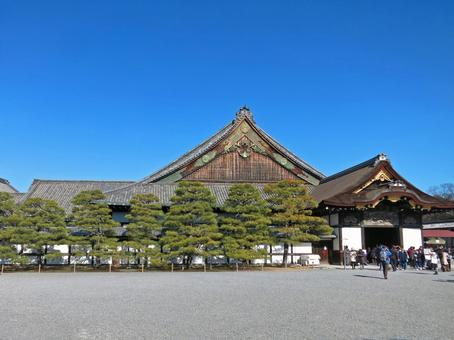

2026年6月2日
京都の中心部に位置する二条城。 1603年に徳川家康によって築かれ、 江戸幕府の始まりと終わりを見届けた 歴史的な場所です。

二条城とは？
二条城は徳川将軍が京都滞在時の 拠点として建てられました。 現在は世界遺産に登録され、 多くの観光客が訪れています。
大政奉還の舞台となった場所。
日本の歴史が動いた瞬間を感じられます。
見どころ
・国宝 二の丸御殿
・うぐいす張りの廊下
・二の丸庭園
・天守閣跡
おすすめ写真スポット
東大手門や二の丸御殿周辺は 人気の撮影スポットです。 春には桜との組み合わせも楽しめます。
おすすめの季節
春の桜、 秋の紅葉が特に人気です。 冬は観光客が少なく、 ゆっくり見学できます。
歴史好き必見
1867年、 徳川慶喜が大政奉還を表明した場所として 日本史の教科書にも登場します。 歴史好きなら必ず訪れたいスポットです。
周辺グルメ
二条城周辺には 京料理や町家カフェが点在しています。 散策後の休憩にもおすすめです。
← トップページへ戻る